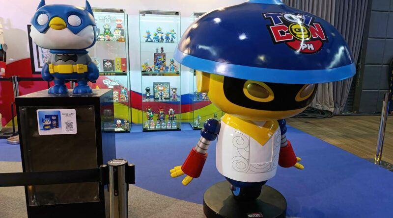

Festivals · Culture
ToyCon Christmas Toys and Collectibles Fair 2026
- Dates
- –
- Venue
- MegaTrade Halls, 5F SM Megamall Building B
- Location
- Mandaluyong, Philippines
- Format
- In-person
- Category
- Culture
- Industry
- Pop culture & collectibles
- Organiser
- TOYCON Philippines
- Official website
- https://toyconph.com/
About
Dates are local Philippine dates (PHT, UTC+8).
Topics: toys, collectibles, cosplay, pop culture.
No organiser attendance figure found on official pages (24 Nov 2026). Ranked by an estimated size tier 'medium' (our judgement from format, venue and scale, not an official number).
Sources
- Official — https://toyconph.com/
Venue
- SMX Megatrade Hall — Convention centre · 5th Level, Mega B, SM Megamall, EDSA Corner Julia Vargas Avenue, Mandaluyong City 1555, Philippines